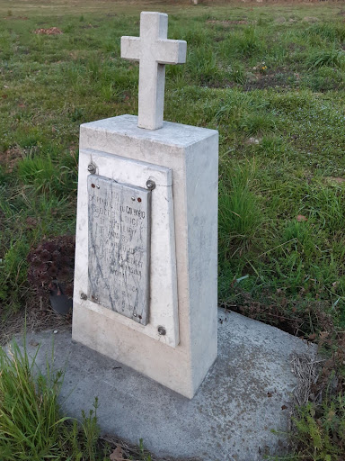

A San Martino di Lupari, sono ormai le prime ore del pomeriggio, comincia a piovere, il 29 aprile 1945, la colonna dei prigionieri tedeschi si avvia verso il punto finale. Nei pressi di Via Cacciatora, uno degli ostaggi crolla insieme a due di Sant’Anna, non essendo più in grado di reggersi. I tedeschi li uccideranno sul posto. Ancora oggi sul posto esiste una lapide a testimoniare il luogo della morte.
